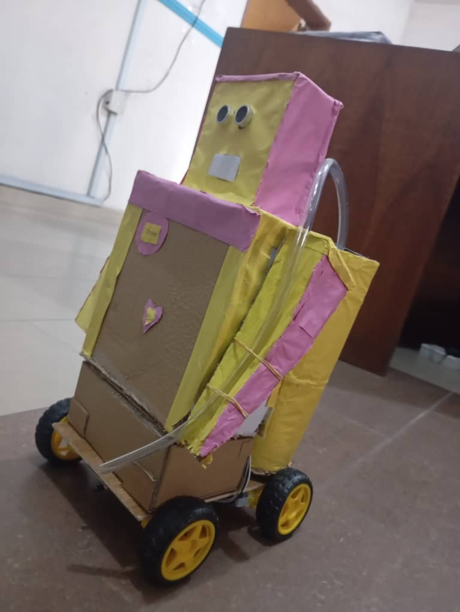
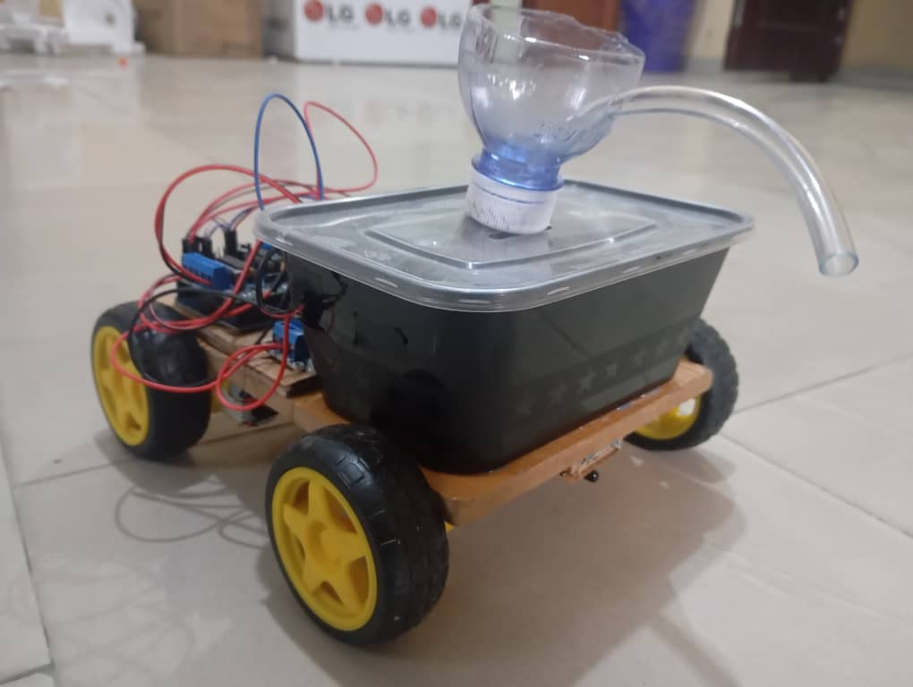
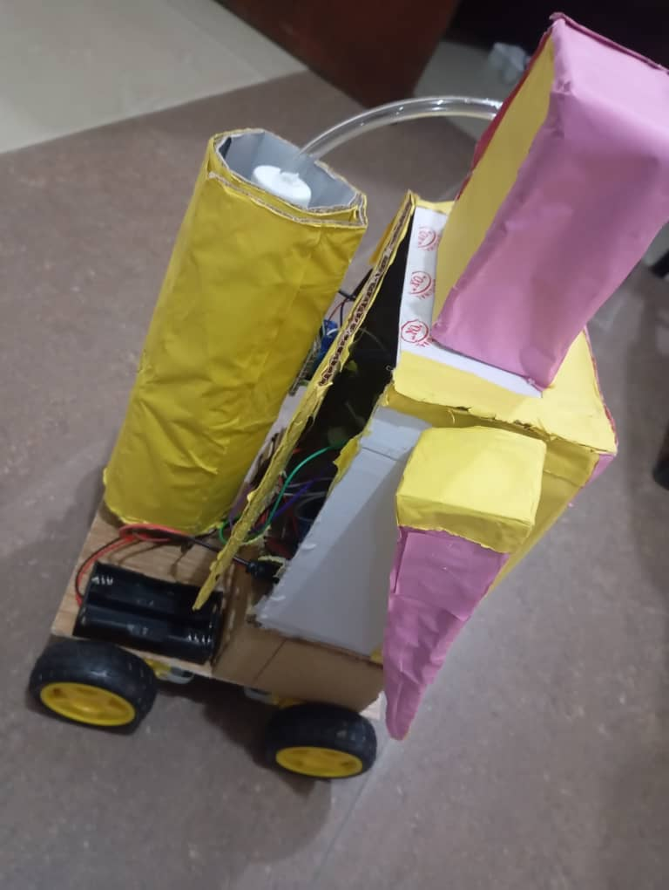

Firefighter humanoid robot that checks whether its spray worked
A wheeled robot with a humanoid-inspired pan/tilt upper body aims a hose, then measures whether the fire is actually responding and re-aims if it is not.
Build status. The paper reports the design and an evaluation protocol. The camera and AI computer, the sensors, the pan/tilt arm and the pump relay have each been assembled and are being integrated onto the mobile base. Full closed-loop operation and field trials are not finished, so no trial results are claimed on this page.
The problem
Firefighting robots usually separate seeing from spraying, aim along a single axis, or assume that switching the pump on means the fire is being put out. Systems that do close the loop tend to depend on thermal cameras, LiDAR and industrial water cannons, which puts them out of reach for many hospitals, factories and homes. This project asks how much of that loop can be kept on low-cost hardware.
The RAPS-SOF control loop
RAPS-SOF stands for Risk-Adaptive Perception-to-Suppression with Suppression-Outcome Feedback. It treats suppression as a cycle of perceiving, acting and evaluating, not a single aim-and-spray step.
- DetectA YOLOv8 detector on a Raspberry Pi 5 finds fire regions and gives a confidence score.
- FuseVision is combined with flame, infrared temperature, gas, distance and tilt readings, each weighted by how reliable it currently is.
- Choose a targetCandidate fires are scored on confidence, size, heat, distance and platform stability, not just box size.
- AimTwo servos, pan and tilt, point the hose at the chosen fire.
- Spray and confirmA flow sensor confirms that water is really leaving the nozzle.
- Check the effectFlame, heat and gas readings before and after are combined into an effectiveness score.
If flow is confirmed but the fire is not responding, the robot goes back to step 3, re-selects the target and re-aims before spraying again. If flow is not confirmed, that is treated as a hardware fault such as a blocked nozzle or an empty tank, not as a failed suppression.
What is and is not new
Multi-sensor fusion and feedback-controlled suppression both have precedent, and the paper says so. The contribution is putting a reliability-weighted low-cost fusion, an explicit check of the suppression outcome and a re-aiming humanoid mechanism into one loop that runs on inexpensive embedded hardware.
Sensor fusion
Each sensor contributes a confidence, and the weights are those confidences normalised. If smoke degrades the camera view, its weight drops. If the flame sensor sees nothing, its confidence falls toward zero. A low infrared temperature discounts a flame-sensor trigger as a likely false positive, and when two high-confidence sensors strongly disagree the robot recalibrates instead of committing to a guess.
Hardware
| Component | Role |
|---|---|
| Raspberry Pi 5 | Vision, sensor fusion and decision logic |
| Arduino Uno R3 | Real-time sensor reading and actuator control over a serial link |
| USB camera | Fire detection with YOLOv8 |
| Flame sensor, MLX90614 infrared thermometer, MQ-2 gas sensor | Confirm fire and estimate heat and gas |
| HC-SR04 ultrasonic sensor, MPU-6050 IMU | Distance to target and platform tilt |
| MG996R servos (pan and tilt) | Humanoid-inspired hose aiming |
| 12 V pump, relay and YF-S201 flow sensor | Water discharge and flow confirmation |
| L298N driver, four-wheel base | Locomotion |
Safety by design
- A watchdog halts the robot if the Pi and Arduino stop talking for 500 ms.
- If vision is lost, the robot falls back to flame, gas and infrared cues; if another sensor is blocked, it falls back to vision plus the rest.
- A physical kill switch and pump temperature monitoring are included.
These are designed safeguards. The paper plans to test them with fault injection.
Planned evaluation
A 4 m by 4 m indoor testbed with smoke, obstacles and airflow, using safe combustion sources such as ethanol burners and candle flames. Five scenarios (clear view, partial occlusion, smoke, multiple fires, moving obstacles) will be run on four configurations: open loop, adaptive without feedback, sensor-only and vision-only baselines, and full RAPS-SOF. Each combination will be repeated at least 10 times and every result reported with its standard deviation and 95% confidence interval. A dedicated test will deliberately offset the first aim to check that only the full system notices and corrects it.
Prototype builds



Why I built it
The idea began with the 2025 Canadian wildfires, when smoke reached Chicago and triggered air-quality alerts across North America. It made a simple case for robots that can enter smoke-filled rooms so that people do not have to.
Next steps
Finish integration and run the full evaluation, then add SLAM-based mapping for multi-room use. Longer term: learning the effectiveness-score weights with reinforcement learning, multi-robot coordination, and thermal or depth sensing for dense smoke.